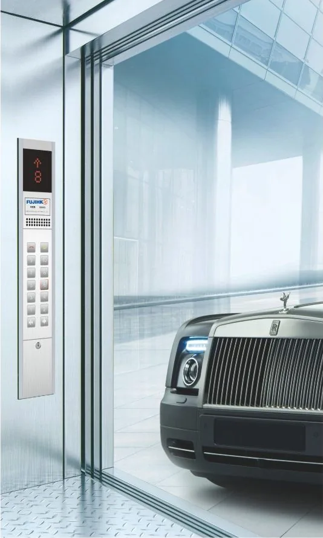

Cada uma tem a sua página, com características, variantes de cabine e dimensões de obra.
Gearless, VVVF e sem casa de máquinas. Para residenciais, comércio, hotelaria e edifícios corporativos.

Vidro e aço em forma semicircular, quadrada, de ângulo cortado ou panorâmica.

Cabine compacta para 3, 4 ou 5 pessoas, com fosso de 800 mm.

Projecto sem casa de máquinas, com menos altura de caixa. Fábricas, armazéns e lojas.

Para parques de estacionamento e instalações subterrâneas.

Pequena carga entre pisos, para restauração, hotelaria e serviços.
Aço inoxidável, espelho, madeira, pedra, iluminação e revestimentos combinam-se para se adaptarem ao conceito do edifício.
Por isso, não utilizamos um simulador que transforma apenas os pisos num preço de elevador. Primeiro precisamos de conhecer o projecto.
Quem utilizará o elevador e para que finalidade?
Pisos, paragens, caixa, percurso e espaço disponível.
Capacidade e configuração adequadas à aplicação.
Condições existentes e trabalhos necessários para a montagem.
Envie as informações que já possui. Se tiver plantas ou fotografias, podem ajudar na análise inicial.
 Executiva standard
Executiva standard Contemporânea
Contemporânea Standard moderna
Standard moderna Premium
Premium Premium gold
Premium gold Black / titanium
Black / titanium Premium warm
Premium warm